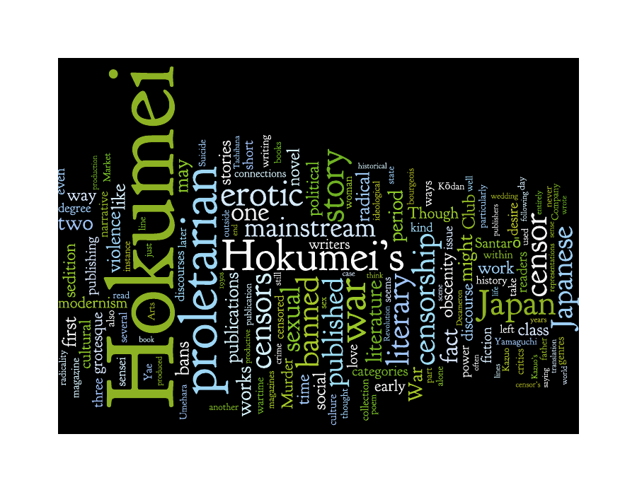
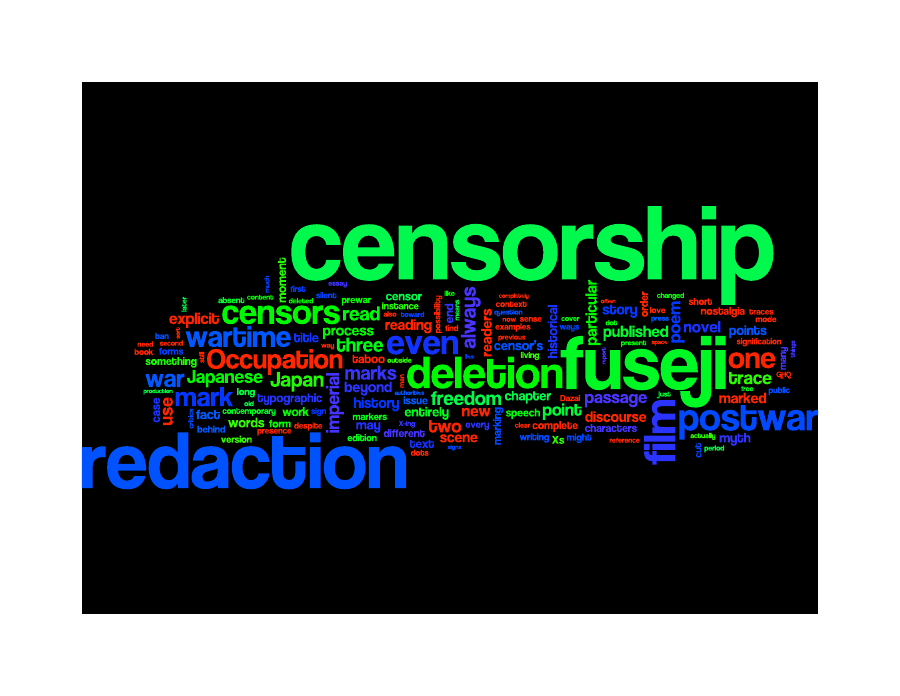
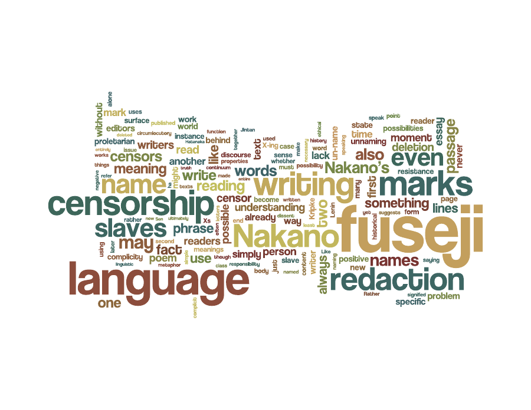

Wordles -- the book in brief


Redacted
You choose a unit – walks, lawsuits, luxury goods, whatever – find its occurrences, place them in space . . . or in other words: you reduce the text to a few elements, and abstract them from the narrative flow, and construct a new, artificial object [. . .]. And with luck, these maps will be more than the sum of their parts: they will possess ‘emerging’ qualities , which were not visible at the lower level.” --- Franco Moretti
Wordles -- the book in brief
Monday, September 17, 2012
One way to read the book at a glance by a look at wordles (keywords as defined by the frequency of usage and represented in size of font). Click here to read the book at a glance.
So here is a wordle summary of the book by chapter.


